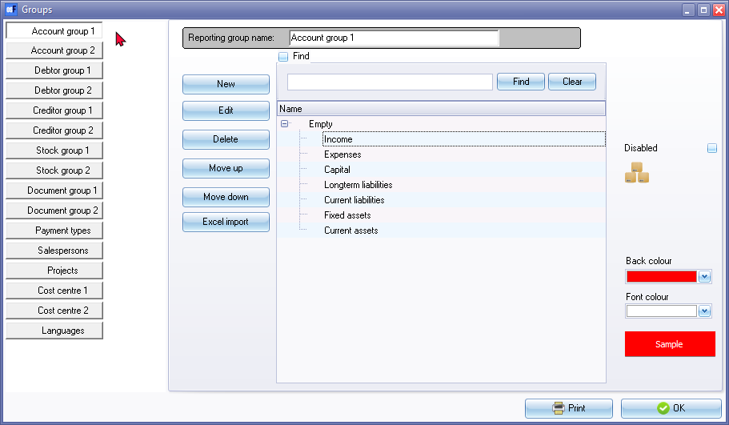

Groups
Reporting groups refer to a collection of items or entities that are grouped together for reporting or analysis purposes.
These groups are typically defined based on some common characteristics, such as geographical location, product line, department, or business unit.
In finance and accounting, reporting groups are used to aggregate financial data and create reports that provide insights into the financial performance of an organization.
The osFinancials5 supports up to two (2) reporting groups for accounts, debtors, creditors, stock, documents. and cost centres. The reporting groups feature in osFinancials5 offers a powerful and user-friendly system for filtering and sorting data. This system is much quicker and more efficient than other methods, and allows users to group, sort, and filter data on most screens in a Set of Books with just a few mouse clicks. This feature is particularly useful for managing and analysing data, and makes it easy to print and group data on reports, pivot tables, spreadsheets, and other types of documents. Overall, the reporting groups feature in osFinancials5 helps users to work more efficiently and effectively with their data, saving time and improving accuracy.
You may set up to two (2) reporting groups for the following features:
- Accounts - You have the option to create two (2) reporting groups (Account group 1 and/or Account group 2) that can be used to categorise the various types of accounts in your chart of accounts, including ledger, bank and tax accounts. Each account must be linked to one of these reporting groups in order to be properly classified.
These reporting groups can be linked to a financial category that will help structure your options for viewing, analysing, and printing financial reports such as the trial balance, income statement and balance sheet.
- Debtors - You may set up to two (2) reporting groups for your debtors (customers / clients). These groups allows you to group or categorise the debtor (customer / client) accounts on which you would like to report. These groups can be linked to each debtor (customer / client) account for better reporting.
- Creditors - You may set up to two (2) reporting groups for your creditors (suppliers / vendors). These groups allows you to group or categorise the creditor (supplier / vendor) accounts on which you would like to report. These groups can be linked to each creditor (supplier / vendor) account for better reporting.
- Stock items - You may set up to two (2) reporting groups for your stock items (products). Stock groups allows you to group or categorise the stock items (products) on which you would like to report. These stock groups can be linked to each stock item (product) for better reporting. analysing and managing of your inventory (products).
- Documents - You can set up to two (2) reporting groups for your documents, which can categorize them based on their types, such as invoices, credit notes, quotes, purchases, supplier returns, and orders. These document groups can be linked to each document for further reporting and analysis.
- Cost centres - You can create up to two (2) reporting groups for cost centres, which can be activated in batches (journals) and/or documents. If you create only one (1) reporting group for cost centres, then only one cost centre group will be available in batches (journals) and/or documents.
Once the batches and/or documents are posted (updated to the ledger), you can select to print reports for each cost centre from the Reports ribbon. By categorizing your cost centres, you can easily track your assets, liabilities, expenses and allocate costs to specific departments or centres.
Groups may also be set for following features:
- Salespersons - You can add salespersons in Setup → Salesperson (Setup ribbon), and they will automatically be listed in the Salespersons groups. You can also edit the salespersons in the groups as needed. When processing sales documents, such as invoices, credit notes, and quotes, as well as purchase documents, such as purchases, supplier returns, and orders, you can select the relevant salesperson. When printing various reports, you can view salespersons.
- Projects - You can create reporting groups to manage and track your projects. These project groups can be activated in batches (journals) and/or documents, and once the batches (journals) and/or documents are posted (updated to the ledger), you can generate reports for each project.
- Languages - You may add different languages to your Set of Books. These languages can be selected in the "Language" field on Setup → Access control (Standard security tab) (Setup ribbon), and it will add a Languages tab on the stock items.
|
|
Multi-Language accounts - Manual - Shop - Licence : Once-off - This plugin enables users to translate ledger and group names into multiple languages, allowing for accounting to be done in different languages. Users can select their preferred language, and the osFinancials user-interface as well as the data in the Set of Books can be viewed in different languages. This feature is especially useful for businesses with employees who speak different languages or for international businesses. Employees can enter information in their preferred language (for example English), while bookkeepers or auditors can view the set of books in a different language, for example, Afrikaans, Dutch, etc. By using this plugin, businesses can improve communication and efficiency, and ensure that all users have access to information in their preferred language. |

- Payment types - To be advised.
To add and set reporting groups:
- On the Setup ribbon, select Setup → Groups.
